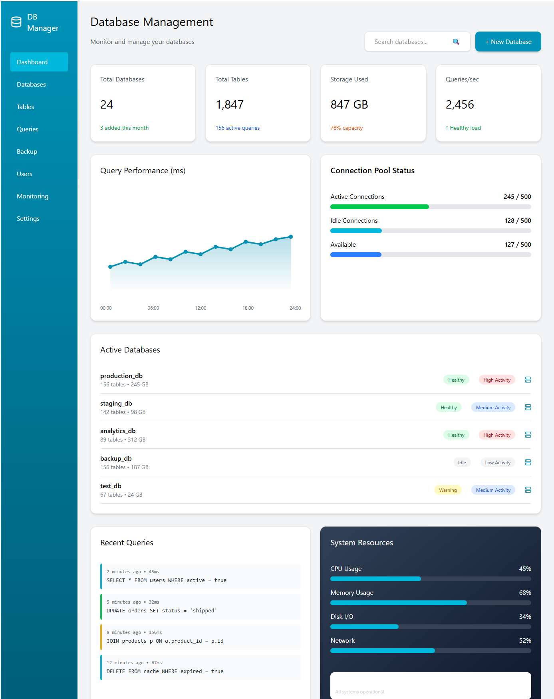
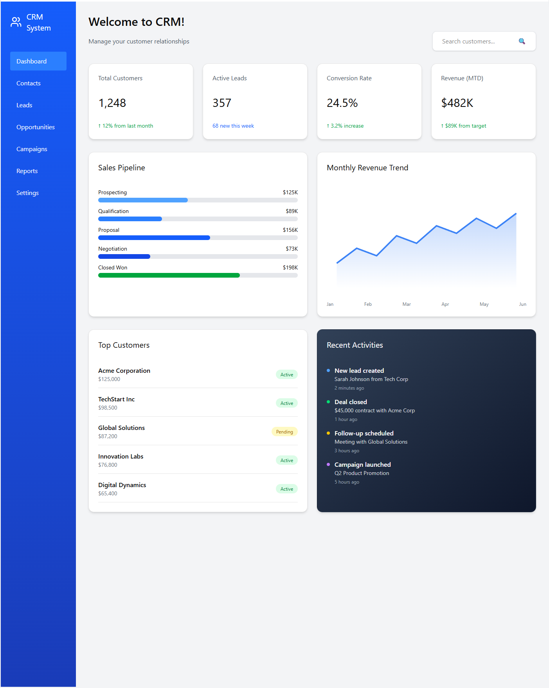
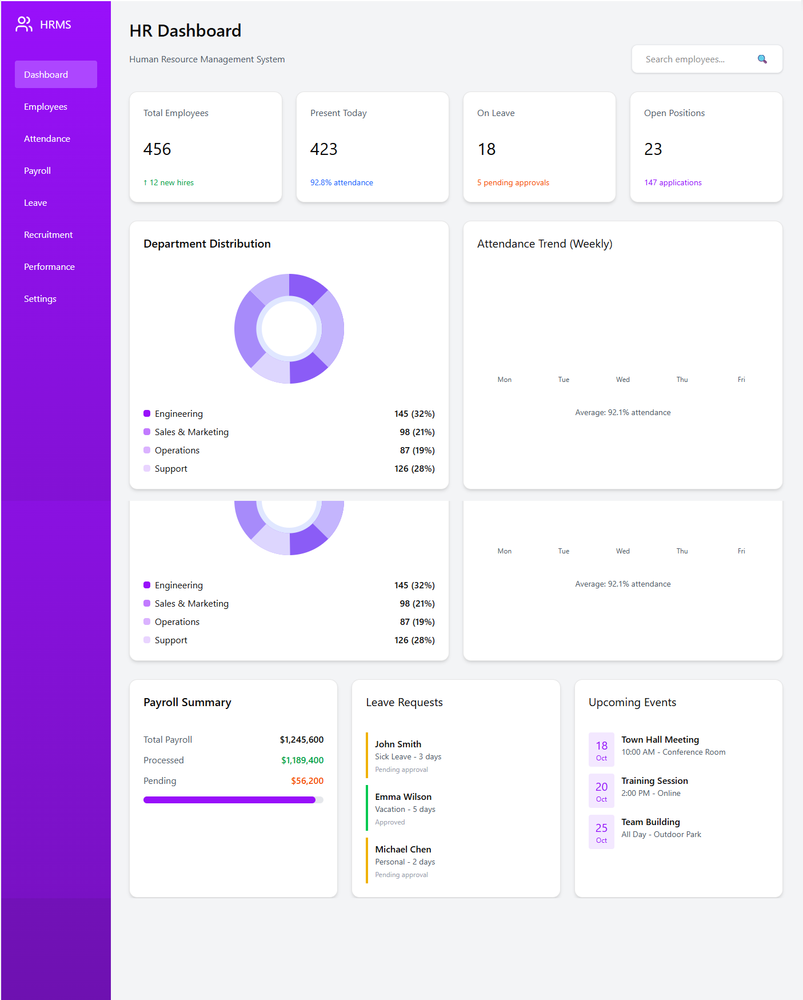
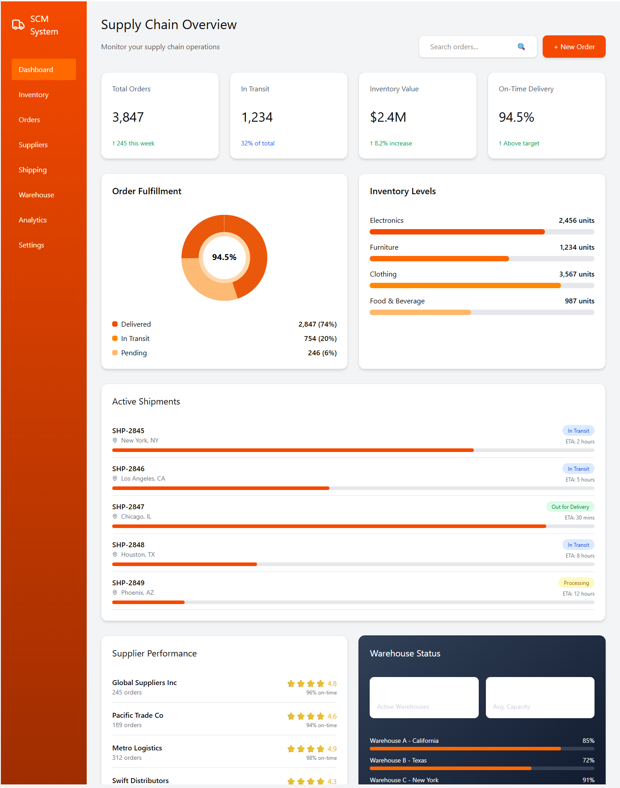
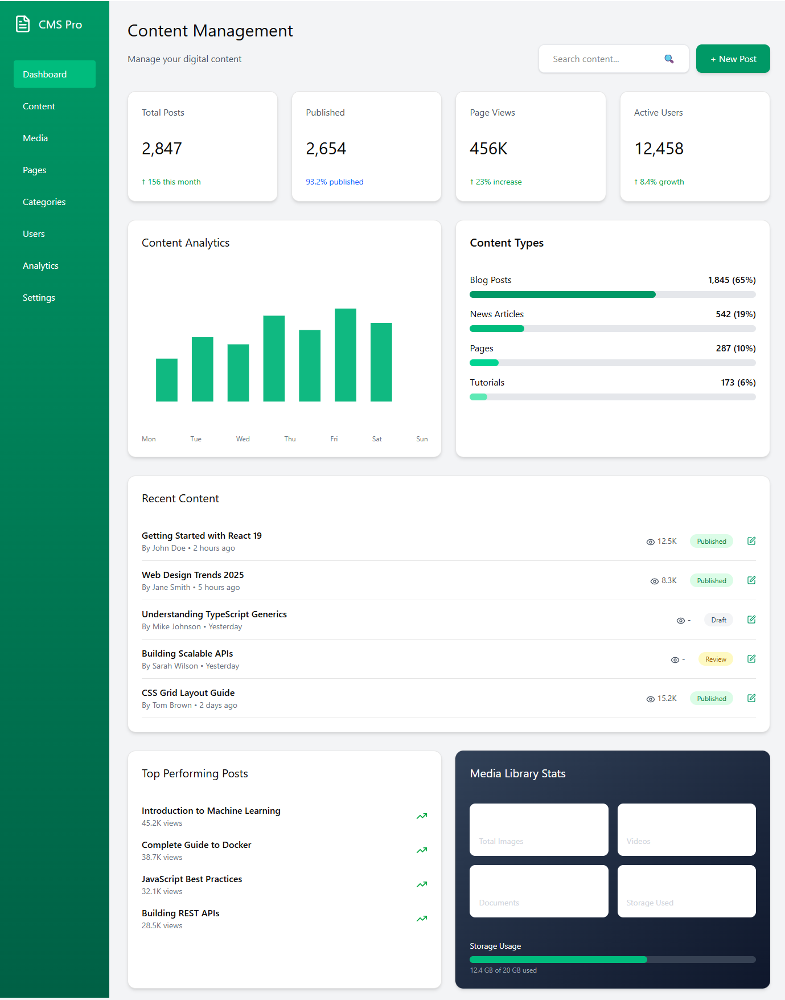

Our ERP systems streamline operations across finance, human resources, manufacturing, supply chain, and customer relationship management. By centralizing data and automating workflows, we help businesses enhance productivity, reduce operational costs, and make data-driven decisions that drive growth and competitiveness in today's dynamic market.
Database Management
Structured Data Storage & Retrieval Systems
Our database management solutions provide robust, scalable, and secure infrastructure for storing, organizing, and retrieving your critical business data. We design and implement high-performance database architectures that ensure data integrity, optimize query performance, and support seamless scalability. From relational databases to NoSQL solutions, we deliver customized data management systems that power your applications and enable real-time analytics for informed business intelligence.

CRM
Customer Relationship Management
Our CRM solutions centralize customer data, track interactions, and automate sales and marketing processes. By providing a 360-degree view of customer journeys, we enable businesses to personalize communication, improve customer satisfaction, increase retention rates, and drive revenue growth through targeted engagement strategies and efficient lead management.

HRMS
Human Resource Management System
Our HRMS solutions help organizations manage their workforce efficiently by digitizing employee records, automating attendance tracking, simplifying leave management, and facilitating performance evaluations. By reducing administrative burden and improving HR workflow efficiency, we enable HR teams to focus on strategic initiatives that enhance employee engagement and organizational culture.

SCM
Supply Chain Management
Our SCM solutions provide end-to-end visibility across procurement, inventory management, logistics, and distribution networks. By leveraging real-time data and predictive analytics, we help businesses minimize costs, reduce lead times, improve supplier relationships, and enhance overall supply chain resilience to meet customer demands efficiently and effectively.

CMS
Content Management System
Our CMS solutions provide intuitive interfaces for content creation, version control, and multi-channel publishing. Whether you need a corporate website, e-commerce platform, or content portal, we deliver flexible and scalable CMS platforms that enable your team to maintain a dynamic online presence, improve SEO performance, and engage audiences effectively.

Custom made Softwares
📚
Learning Management System
Comprehensive platform for course management, student tracking, and interactive learning experiences.
Course CreationOnline ExamsProgress Tracking
📦
Custom Inventory Management
Tailored inventory solutions for real-time stock tracking, automated reordering, and supply chain optimization.
Stock ControlBarcode ScanningReports
🛒
Point of Sale System
Modern POS solution with payment processing, inventory sync, and customer management capabilities.
Payment GatewayInvoice GenerationSales Analytics
⚙️
Workflow Automation Tool
Streamline business processes with intelligent automation, task management, and seamless integrations.
Task SchedulingAPI IntegrationNotifications
✅
Quality Control & Inspection
Ensure product excellence with digital inspection workflows, defect tracking, and compliance reporting.
Inspection ChecklistsDefect TrackingCompliance
🎓
Student Attendance & Fee Management
Complete solution for tracking attendance, managing fee payments, and generating detailed reports.
Biometric IntegrationFee CollectionParent Portal
Work Flow
1
Requirement Phase
BSA Team
2
Planning Phase
Project Manager, Tech Team
3
Design Phase
UI/UX Team, DBA (Database Architect), System Architecture
4
Development Phase
Frontend Development, Backend Development, Database Engineer, BSA Support
5
QA and Testing Phase
QA Team
6
Deployment Phase
DevOps Team, Final Review
7
Maintenance & Support Phase
Support Team, BSA Involvement
Requirement Phase
BSA Team
The Requirement Phase serves as the critical foundation for any successful software development project. During this phase, the Business Systems Analyst (BSA) team works closely with stakeholders to understand their business objectives, pain points, and desired outcomes. This collaborative approach ensures that every aspect of the client's needs is captured accurately and translated into clear, actionable requirements.
Through comprehensive interviews, workshops, and documentation reviews, the BSA team creates a detailed roadmap of functional and non-functional requirements. This phase establishes the project scope, identifies potential risks, and sets realistic expectations for all stakeholders. The thoroughness of this phase directly impacts the success of subsequent development stages, making it an indispensable component of the software development lifecycle.
Key Focus Areas
Conduct stakeholder interviews and requirement gathering sessions to understand business needs and objectives
Document comprehensive functional and non-functional requirements in Business Requirement Documents (BRD)
Perform feasibility analysis to assess technical, operational, and financial viability of the project
Define clear project scope boundaries and create requirement traceability matrix for tracking
Identify and document potential risks, dependencies, and constraints that may impact project delivery
Planning Phase
Project Manager, Tech Team
The Planning Phase transforms business requirements into a strategic execution roadmap. Led by the Project Manager in collaboration with the technical team, this phase establishes comprehensive project timelines, resource allocations, and risk mitigation strategies. The planning process involves breaking down complex requirements into manageable work packages, estimating effort and duration, and assembling the right team with appropriate skill sets.
This phase also involves selecting the optimal technology stack, defining development methodologies (Agile, Scrum, or Waterfall), and establishing clear communication channels among team members and stakeholders. A well-structured plan serves as a guiding framework throughout the project lifecycle, enabling teams to track progress, manage changes effectively, and ensure timely delivery within budget constraints while maintaining quality standards.
Key Focus Areas
Create detailed project timelines with milestones, dependencies, and critical path analysis for efficient tracking
Allocate resources strategically including developers, designers, and specialists based on project requirements
Develop comprehensive risk management strategies with contingency plans and mitigation approaches
Select appropriate technology stack and define architecture patterns that align with project goals
Establish communication protocols, reporting mechanisms, and governance structure for project oversight
Design Phase
UI/UX Team, DBA (Database Architect), System Architecture
The Design Phase brings conceptual requirements to life through detailed technical and visual specifications. The UI/UX team crafts intuitive user interfaces and seamless user experiences, ensuring that the application is not only functional but also engaging and accessible. Simultaneously, Database Architects design robust, scalable database schemas that efficiently store and retrieve data while maintaining integrity and performance.
System Architects work on defining the overall application architecture, including component interactions, API structures, security frameworks, and integration patterns. This phase produces comprehensive design documents, wireframes, prototypes, and technical specifications that serve as blueprints for the development team. The quality and completeness of design artifacts directly influence development efficiency and the final product's quality.
Key Focus Areas
Create detailed UI/UX wireframes, mockups, and interactive prototypes with user flow documentation
Design comprehensive database schemas including entity relationships, normalization, and indexing strategies
Develop system architecture diagrams showing component interactions, data flows, and integration points
Define API specifications, endpoint structures, authentication mechanisms, and data exchange formats
Establish design systems with reusable components, style guides, and accessibility compliance standards
Development Phase
Frontend Development, Backend Development, Database Engineer, BSA Support
The Development Phase represents the core execution stage where designs and specifications transform into functional, working software. Frontend developers build responsive, interactive user interfaces using modern frameworks and technologies, ensuring cross-browser compatibility and optimal performance. Backend developers simultaneously construct robust server-side logic, APIs, and business rule implementations that power the application's functionality.
Database Engineers implement and optimize the database structures, manage data migrations, and ensure data integrity through stored procedures and triggers. Throughout this phase, the BSA team provides continuous support to clarify requirements and validate that implementations align with business objectives. The development process follows coding best practices, includes regular code reviews, implements comprehensive unit testing, and utilizes version control systems to maintain code quality and enable collaborative development.
Key Focus Areas
Develop responsive frontend interfaces with modern frameworks ensuring cross-platform compatibility and performance
Build robust backend APIs and business logic with proper error handling and security implementations
Implement and optimize database structures with efficient queries, indexing, and data integrity constraints
Integrate third-party services, payment gateways, and external APIs following security best practices
Conduct regular code reviews and maintain comprehensive unit test coverage for quality assurance
QA and Testing Phase
QA Team
The QA and Testing Phase ensures that the developed application meets all specified requirements and performs flawlessly under various conditions. The QA team develops comprehensive test plans and test cases covering functional, integration, performance, and security aspects. This systematic approach to quality assurance identifies defects early, reduces the cost of fixes, and ensures a superior end-user experience.
Testing encompasses multiple levels including unit testing, integration testing, system testing, and user acceptance testing (UAT). Performance testing evaluates the application's behavior under expected and peak load conditions, while security testing identifies vulnerabilities and ensures data protection. The QA team maintains detailed bug tracking systems, collaborates with developers for timely resolution, and performs regression testing to verify that fixes don't introduce new issues. This rigorous quality assurance process is essential for delivering reliable, production-ready software.
Key Focus Areas
Execute comprehensive functional testing covering all features, workflows, and business logic scenarios
Perform integration testing to verify seamless communication between different system components and modules
Conduct performance and load testing to ensure application stability under various user traffic conditions
Execute security testing including vulnerability assessments, penetration testing, and data protection validation
Coordinate User Acceptance Testing (UAT) with stakeholders and maintain detailed bug tracking and resolution logs
Deployment Phase
DevOps Team, Final Review
The Deployment Phase marks the transition from development to production environments, requiring meticulous planning and execution. The DevOps team configures production infrastructure, sets up monitoring systems, and implements automated deployment pipelines to ensure smooth and reliable releases. This phase involves careful coordination to minimize downtime and ensure business continuity during the go-live process.
Prior to deployment, comprehensive final reviews are conducted including security audits, performance benchmarks, and deployment readiness assessments. The team prepares detailed rollback plans to quickly revert changes if issues arise. Post-deployment activities include smoke testing to verify critical functionality, monitoring system health, and providing immediate support to address any emerging issues. User training sessions and documentation handovers ensure that end-users and support teams are prepared to use and maintain the new system effectively.
Key Focus Areas
Configure production environments with proper security measures, scaling capabilities, and backup systems
Execute automated deployment pipelines with zero-downtime strategies and comprehensive health checks
Perform data migration to production with validation checks ensuring data integrity and completeness
Conduct final security audits and performance optimization to ensure production readiness
Deliver user training sessions, technical documentation, and establish post-deployment monitoring and support protocols
Maintenance & Support Phase
Support Team, BSA Involvement
The Maintenance & Support Phase ensures the long-term success and continuous improvement of the deployed application. The support team provides ongoing monitoring, incident management, and user assistance to maintain optimal system performance and user satisfaction. This phase is crucial for addressing unexpected issues, adapting to changing business needs, and implementing enhancements that add value over time.
Regular system health checks, performance tuning, and security updates keep the application secure and efficient. The BSA team remains involved to evaluate enhancement requests, prioritize feature additions, and ensure that ongoing changes align with evolving business objectives. This phase includes maintaining comprehensive documentation, managing user feedback, implementing bug fixes, and planning for future upgrades. Effective maintenance and support maximize return on investment and ensure that the application continues to deliver business value throughout its lifecycle.
Key Focus Areas
Provide 24/7 monitoring with automated alerting systems for proactive incident detection and resolution
Manage incident tickets with defined SLAs ensuring timely response and resolution of user issues
Perform regular system maintenance including security patches, performance optimization, and database tuning
Evaluate and implement enhancement requests that align with business priorities and add user value
Maintain up-to-date documentation, knowledge bases, and training materials for users and support staff